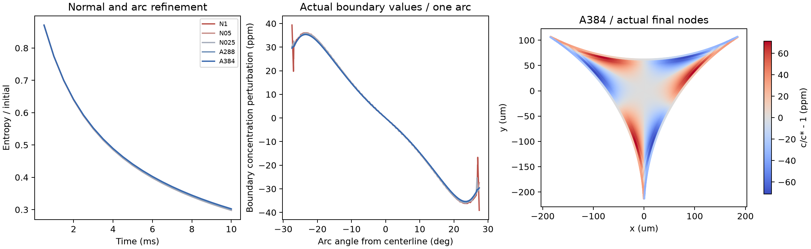

← FROTH 研究入口NORMAL LAYERS / DISCRETE CHECKS PASS, ACCURACY INCOMPLETE
分开检查法向、弧向与时间误差。
8 组松弛、180 步与 5 组受控流动检查。增加近界面节点，保持原有截面边界与材料参数；新增界面浓度迹，而非只比较总能量。
0.711%法向首层 .5→.25μm，界面浓度迹 L2 差
0.581%n288→n384，界面浓度迹 L2 差
1.545%同组网格的内部浓度扰动场 L2 差，仍超1%

下载矢量 PDF · 算例、物理输入和离散门槛 · 场差、界面迹与独立收支审计 · 初始及续算源码哈希
12 项求解/收支检查通过，精度目标尚未全部满足。n288→n384 的终态自由能差 .337%、内部场差1.545%；n192 的 dt=.5→.25ms 界面迹仍差1.356%。封闭、固定几何、瞬时 Henry 平衡和稀溶液假设保持不变；没有真实进膜、运动泡沫、粗化、破裂或实验验证。
执行矩阵与原始字段
N1/N05/N025 固定 n192、16 层内部种子，逐次增加1/.5/.25μm 法向层；所有法向层依次含2、4、8μm。A288/A384 同用 .25μm 首层，增加弧向及内部种子分辨率。T025 只减半 N025 时间步；D288 是与 A288 完全同网格的无流动对照；uniform 为均匀场。初值系数 ε=.01 乘同一三次形状函数，不等于实际浓度1%。
A288 的相对自由能终值 .30118，D288 为 .94822，说明该离散闭合模型中流动明显加快松弛。该对照不能证明真实泡沫混合率，亦不能替代后续开放入口和几何运动。
逐项误差比较
内部场比较使用所有网格共同覆盖的 3,483 个固定点，比较 c/c*−1，避免用常数背景掩盖差异。界面迹用计算边界节点的浓度，按每条真实圆弧角参数作分段线性重构；在两网格角节点并集上精确积分该重构函数的 L2 差。这里保留多边形/圆弧参数化差异，不把重构当作新的求解状态。old192/old288 是上一批未加法向节点的冻结数据。
守恒、几何和对称性
正性、总量、能量非增、完整离散能量收支、各耗散非负、非线性残差、Re、均匀态，以及静态功率/散度/法向漏流/动量检查全部通过。独立从 CSV 重建节点总量、终态自由能及逐步收支也通过。网格审计证明默认节点、三角形和容量与冻结 n192 完全相同；法向分层下截面面积、气液长度和总容量仅有舍入差异。容量的三重旋转误差约10⁻¹³量级。
场的对称性尚有离散误差，未被强制消除：N1 最大点差约为初始峰值扰动的25.9%，A384 降至0.671%；D288 仅约2.2×10⁻¹⁰。这提示流动离散及入口端部附近仍需检查，不能据容量对称就宣称流动逐点对称。所有数值均保留在 comparison.json 中。
资源问题与恢复记录
首次最细网格构造时，进程私有内存观测达到约30.4GB，主动终止该算例并保留前7组结果。已安装库的批量点定位会形成候选单元与采样点的交叉临时数组，现将同一定位/求值分为每批64点。验证网格上新旧探针矩阵差为0，二次函数复现误差1.67×10⁻¹⁶，Marangoni/对流功率相对差4.07×10⁻¹²。探针与功率审计。
仅续算 A384，未重启前7组。protocol.json 区分初始与续算源码；初始脚本按原始哈希恢复，原始字节保存在仓库 logs/section-normal/initial-source-bytes.zip；相邻 .py 是便读副本，其行尾可随 Git 转换。收敛算例耗时合计约224秒，不含被停止的资源开销。另保留JSON布尔序列化错误日志，已修正后重跑小型审计。没有改动方程、材料输入或误差门槛。
接下来怎样通向多泡闭环
继续补时间与内部场精度，并独立检查流动离散的旋转误差。下一物理接口是开放通流参考：固定不可压缩截面必须满足各入口/出口流量代数和为零；边界反力做功不能从能量式删除。真正积累三张膜的净来液则需要移动几何、各控制体的几何守恒和变化的界面储存。
随后连接有限膜与边界、空间网络、气体粗化及 CODA 接触/动量接口。开放边界的兼容条件与全目标后续门槛。不以局部组件替代完整四泡/七泡闭环目标。